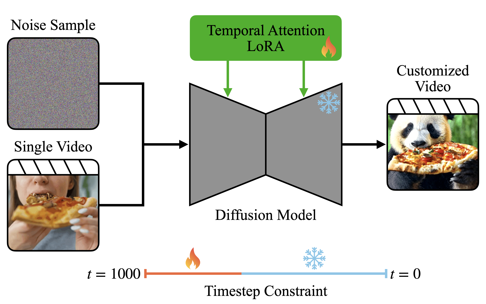

|
Vatsal Baherwani Hello! I am currently a visiting researcher at the Center for Human-Compatible AI at UC Berkeley. I am also starting my PhD at NYU in Fall 2025. I previously graduated with a bachelor's degree from the University of Maryland, where I was fortunate to work with Abhinav Shrivastava, Ashwinee Panda, and Tom Goldstein. I occasionally post essays on my blog. I use this as an exercise to write more often and get used to publishing imperfect work publicly, so I would be happy to hear feedback on any of my posts. |

|
Publications |
|  |
Video Diffusion Models Encode Motion in Early Timesteps
Vatsal Baherwani, Yixuan Ren, Abhinav Shrivastava In Submission We show that motion information is independently learned in early timesteps of the diffusion process, prior to the materialization of spatial attributes. We use this insight to present a simple and efficient method for targeted video motion customization. |

|
Dense Backpropagation Improves Routing for Sparsely-Gated Mixture-of-Experts
Ashwinee Panda*, Vatsal Baherwani*, Zain Sarwar, Benjamin Therien, Supriyo Chakraborty, Tom Goldstein NeurIPS 2024 OPT Workshop We approximate the dense backward pass of a sparse mixture-of-experts model, leading to improved training stability and performance with negligible overhead. |
|
This website is built on a template by Jon Barron. |